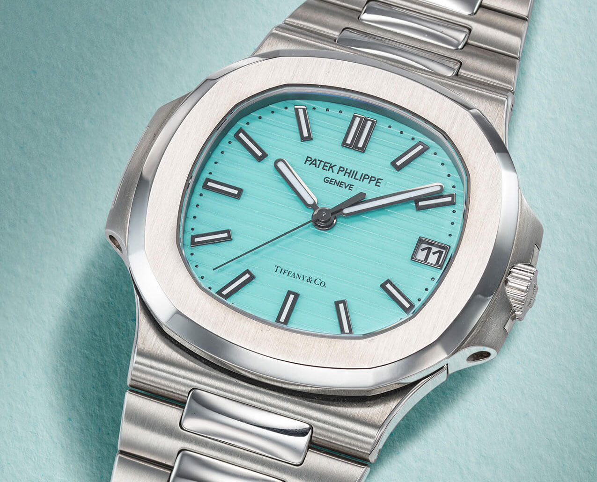

Kendrick Lamars famous album conver of "Mr.Morale and the Big Steppers" shows him sporting the tiffany crown.

One of the most famous and historic horological brands, Patek Phillipe, collaborating with T&C to create a striking piece.
The now famous, and copyrighted use of Tiffany blue on their products.